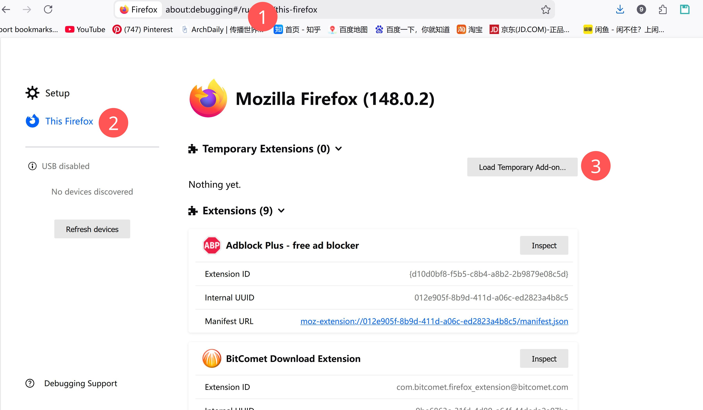
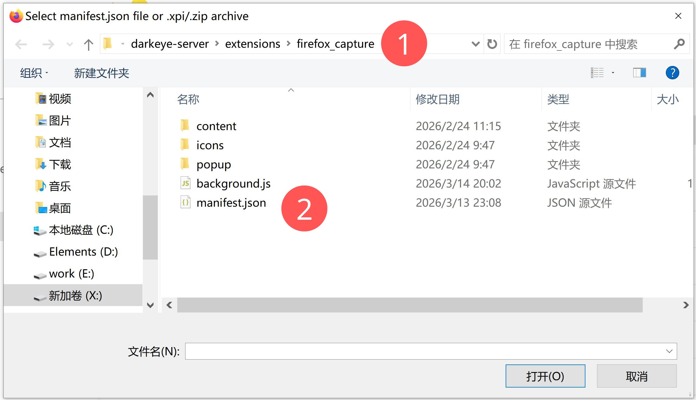
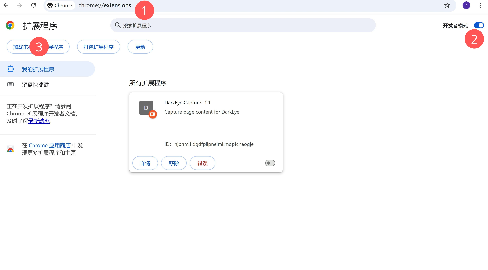
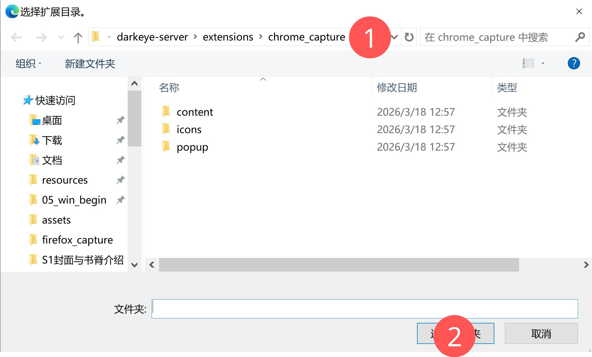
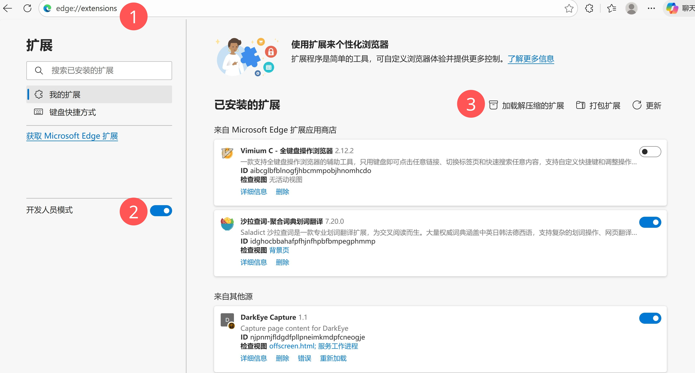

入门指南
下载软件¶
 把下面的插件也下载了。
把下面的插件也下载了。
安装浏览器插件¶
这里以「本地加载已解压扩展」为主，不需要商店账号。三种浏览器可以同时安装，但建议只启用一种进行自动采集，避免重复打开页面。
Firefox 插件¶
- 打开 Firefox，地址栏输入：
about:debugging#/runtime/this-firefox - 点击页面中的 「临时加载附加组件」（或「Load Temporary Add-on」）。
- 在文件选择对话框中，定位到仓库目录下：
extensions/firefox_capture/manifest.json，选中并打开。 - 右上角会出现
DarkEye Capture图标： - 看到图标说明加载成功。
- 关闭浏览器或重启后需要重新临时加载（若要持久安装，可以打成 xpi 再导入，这里先不展开）。


Chrome 插件¶
- 打开 Chrome，地址栏输入：
chrome://extensions/ - 右上角开启 「开发者模式」。
- 点击左上角 「加载已解压的扩展程序」（Load unpacked）。
- 在文件选择对话框中，选择目录：
extensions/chrome_capture，然后确认。 - 在扩展列表中确认：
- 出现
DarkEye Capture，且开关为开启状态。 - 点击「详情」可以看到：
- 背景页类型为 Service Worker；
- 有一个 Offscreen 文档在运行（用于接收软件端下发的自动采集指令）。


Edge 插件¶
Edge 基于 Chromium，可以直接复用 extensions/chrome_capture 目录：
- 打开 Edge，地址栏输入：
edge://extensions/ - 左下角开启 「开发人员模式」（Developer mode）。
- 点击 「加载解压缩的扩展」（Load unpacked）。
- 在文件选择对话框中，选择目录：
extensions/chrome_capture，然后确认。 - 在扩展列表中确认
DarkEye Capture已启用。
提示：
- 若你只想让 Firefox 自动采集，可以在 Chrome / Edge 中关闭DarkEye Capture扩展的开关；
- 若只想用 Chrome/Edge 自动采集，可以在 Firefox 的附加组件管理中禁用DarkEye Capture，避免多个浏览器同时响应同一条爬虫指令。

如何把片子「收进来」？¶
目前有 三种主要方式，普通用户推荐第 1 种。
方式一：用浏览器插件采集（推荐） 适合：你平时在 javdb / javlibrary / javtxt 上逛片子。
步骤：
确保： DarkEye 软件已启动 Firefox 插件已加载（上一节的步骤） 在 Firefox 打开其中任意一个网站，例如 javdb 在网页上浏览某个作品详情页 点击浏览器里的插件按钮（或页面中出现的“收藏 / 收录”按钮） 软件会自动弹出 / 激活，并开始爬取该作品的信息，写入本地数据库 提示：
第一次访问 javlibrary 时，可能会被 Cloudflare 挡一下，手动点一次通过即可，之后约 20 分钟内都不需要再过盾。 采集的内容包括：发布时间、导演、中/日文标题、剧情简介、女优、男优、标签、封面等。
方式二：从本地视频反向识别¶
适合：你本地已经有大量视频，希望让软件尽量自动识别番号并入库。
在软件中打开：设置 -> 视频 添加你存放影片的文件夹路径（可以多个） 打开：管理 -> 批量操作 -> 查找本地视频并录入添加 软件会：
扫描你设置的文件夹 从文件名中尝试提取番号 把识别到的结果放入爬虫队列，慢慢去网上补全信息（约 20 秒一次请求） 重要提示：
这一步的识别准确度目前不高，只是帮你省一点力气。 建议在「管理 -> 添加/修改作品」里，后面手动检查和修正关键信息。
方式三：纯手动添加番号¶
适合：看到一个想记下来的番号，或者需要补录特别的作品。
在软件任何地方按下快捷键：W 会弹出「快速添加作品」窗口 输入番号、标题、简单剧情等信息，保存后该作品就会出现在你的数据库中 后续可以在编辑界面里进一步补充详细信息、封面、标签等